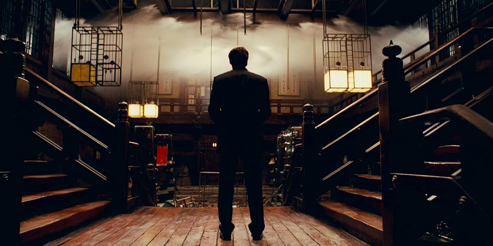

Dreams Respond To The Matrix
Inception VS. the Matrix
May 28, 2024
This post is somewhat in response to the excellent series of articles written by the The Last Psychiatrist (TLP). Although it is not required to understand the piece I recommend anyone reading this to check out the series of old blog posts starting with The Action Movie Fairy Tale.
At some point in a mans life he must confront the fact that his existence is not going to be an action movie. Most of us learn from an early age that the world is not filled with evil ninjas and that you’ll never dual wield an AK in each hand while firing indiscriminately at a rushing horde of bad guys. Despite this, despite how smart, mature, or realistic you think you are, any red blooded American worth his salt and raised by a never ending barrage of media always holds out just the slightest bit of hope that one day you’ll get your call to adventure. There is always that voice in the back of your head that tells you if you just stay patient that one day someone will come along to put a great weapon in your hand and give you the permission to enact nineties era Schwarzenegger violence against the world that never acknowledged you.
Neil Stephenson in his book Snow Crash echoes a similar point when he writes that, “Until a man is twenty-five, he still thinks, every so often, that under the right circumstances he could be the baddest motherfucker in the world”. But what happens after twenty-five? What happens when you don’t just believe that you’ll never be the baddest motherfucker in the world but you know it? What happens when instead of damsels in distress and making one liner quips before executing the bad guy you are confronted with the reality that you are not the chosen one? How does one cope with the fact that instead of becoming Neo flying above the Matrix you became Mr Anderson, that you became part of the Matrix, that you became the very person you were taught to hate? According to TLP once this realization occurs you only have three options:
1. alcoholism and depression, especially the subtle variety called ennui
2. accepting reality and finding one's place
3. the schizotypal condition
Although drug abuse and depression are on the rise option number one still comes at the cost of acknowledging reality leaving only one other viable option for the budding coming of age narcissist, “I’ll take door number three Monty”. Although schizotypal immediately conjures up the image of the homeless guy by the liquor store talking to his imaginary friend schizotypal is different then schizophrenic. It is is a far less sexy condition, instead of voices in your head it is marked by isolation and a inability to connect with others often paired with eccentric beliefs about the world. In other words they are the shunned hero at the beginning of the movie right before the plot magic kicks in. In a age of tedium and boredom It’s easy to see why this condition is so prevalent, after all who would deny themselves the possibility of living in a world where it’s only a matter of time before a nineties hacker chick in latex comes to save you from your office job and proclaim her love for you after anointing you as cyber Jesus in a trench coat? The question though isn’t why this is appealing or even why the Matrix as a narrative spoke to the previous generation. The question is why after more than twenty years and three shitty squeals is it still the dominant narrative? Is it possible to escape the Matrix?
“We believe that we invent symbols. The truth is that they invent us; we are their creatures, shaped by their hard, defining edges.” - Gene Wolfe, The Shadow of the Torturer
In order to understand how a narrative captures the attention of multiple generations we must first understand the structures that gave birth to it. After Nietzsche announced the death of God it was only a matter of time before the word went with it, after all it was John who said that, “in the beginning was the word and the word was with God and the word was God”. And so too did the word fall along with it’s craftsman the author whose death was pronounced shortly there after. (I didn’t know he was sick). The news of this was less devastating than you would suspect and after a while of waiting for an ubermensch that never came we settled for a Superman who would. It didn’t matter that he wasn’t real or that he wore a stupid outfit and a cape we were satisfied that if self overcoming was out of our reach than at least we could believe a man could fly. This lasted all the way through the nineties and possibly a little further where the American population was content replacing a quest for meaning with the steady drip of entertainment pumped through us in over fifteen hundred cable channels running 24/7. Sadly though, all drugs wear off and when the sedative stops working reality comes crawling back. This is why we needed the Matrix, not as an antidote to the question of meaning but an escape from it.
Baudrillard may have been the absent father of the Matrix but it was Marshall McLuhan and his thesis that “The medium is the message” that made the film the man it is today. Although McLuhan’s popularity has faded his framework for analyzing media is probably still the best tool available for understanding media in light of the (post)modern condition. To McLuhan the content of any production is secondary to the tool used to produce it. This is not to say that the content of a medium is meaningless or unimportant but it is a reversal of the way in which we typically understand the media ecology. For McLuhan the message does not reside within the narrative of a story or the picture on a canvas; instead, content is the vehicle through which the medium expresses itself. The point of every film is the camera not the heroes journey. So what is the message of the camera, what is the essence of cinema? If you’ve ever read The Republic the similarities between a movie theater and Plato’s allegory of the cave should immediately come to mind as an answer to this question. “The real world is out there Neo”. “Your reality is a lie”.
The proposition that the essence of film carries with it a message of reality being a lie (or that it even has a message at all) leads to the very obvious question: “Then why isn’t every film about reality being a simulation”? Although it is probably possible to make the argument that this is the message of all film at an esoteric level, this position seems untenable and the much more unsatisfying yet much much more reasonable answer to this question would simply be that as stated above the content is secondary to the medium itself. It does not necessarily matter what specific text is present since it’s very existence as a product of the camera is a propagation of the message of the medium. In fact, explicitly using this message is incredibly difficult to pull off in a film as it usually comes off as a clunky delivery system for that medias message since you are making what is implicit explicit. It’s like making a film about a guy who just continuously beats a dead horse; the first minute is funny the other 89 ensures no one will stay until the end. No one likes a narrative that tells you what it’s message is, all good filmmakers and artists know that the point is to get the audience to arrive their on their own.
If the dominant lens through which modern man viewed the world was physics then postmodern society can only be understood from the perspective of information theory. Both The Matrix and Inception clearly embrace the new science of post modernism while disregarding laws of physics in favor of pure uncut information. It’s not a coincidence that the two most memorable action sequences in each film are centered around characters defying the laws of physics. Another signal that these films embrace information theory rather than classical mechanics is that power in these worlds is not based on physical strength but the flow of data. But even though both films derive power from information transfer they differ in their beliefs about which direction power is derived from. In the Matrix we never see a character upload information there is only a downstream flow of data where power is obtained solely from download. In this world knowledge is indistinguishable from data. There is no need to practice to know or to achieve you simply have your tech put the floppy disk in your brain and you know kung fu. Inception on the other hand is primarily concerned with the upstream flow of information where the ultimate goal of the film is to implant an idea in another. This seemingly insignificant difference between the direction of information transfer is where the true difference between the two films resides and it is the reason why only one of these movies still has the stranglehold it does on the culture today.
Inception at it’s core is the transference of ideas from one individual to another. As we learn from the beginning of the film the difficulty with inception is that the mind is very good at rejecting foreign ideas. Extraction, which is the the opposite of inception and the way Cobb (Leo) earns his keep is the process of stealing ideas from the subconscious dreamer. Inception unlike extraction is only possible indirectly, seeds may be planted in the others subconscious but to turn them into concrete ideas requires the cooperation of the subject. This resistance to the other is represented visually in the film by an armed security force that protects the dreamers subconsciousness. Although not particularly subtle to turn defense mechanisms into a literal defense force armed with military gear this lack of subtlety is exactly what allows Nolan to so effectively perform his own form of Inception on the audience. Inception plays a lot with the concept of mirroring where the medium mimics the content and the screen reflects the audience.
“As above so below”
The more or less accepted esoteric reading of Inception is that it is a film about filmmaking. It is absolutely true that inception is about the creative process and the act of creating an effective narrative but this is not because inception is about filmmaking but because filmmaking or art in general is about inception. At it’s most fundamental level all art is just an interface between creator and consumer. The smoother the data feed between the two the more well made the piece of art is. This is why the difficulties of inception mirror that of filmmaking. The reason an idea cannot be directly placed into the subconscious are the exact same reason why audiences instinctively cringe when the message of a film is so heavy handed. We have to remember the words of McLuhan, “the medium is the message” and if that message is your world is a lie than it is up to audiences to seek out the truth not have it spoon fed to them. Anyone can upload a file or information but anyone who has posted anything online knows the difficulty is in getting others to downlaod it.
This process of mirroring can be seen when Cobb decides that the only way to move deeper into the mind of the dreamer is to tell him that he is dreaming. All good liars like all good artists know that the most effective lie is the one that purposefully tells on itself in order to conceal something greater. The action scenes in the film serve the purpose of concealing the greater lie. Nolan comes to the audience with open arms confessing that he made a big dumb action movie and then as a reward for his honesty the viewer like the subject of inception in the film allows someone elses dreams to penetrate their mind. Cobb tells the subject that he is dreaming, he tells the audience what they should already know, that this is not real, that what you think is reality is a lie and yet this just leads to a journey deeper down the rabbit hole.
The armed defense mechanisms function the same way in the real world and in the dream world of the movie. Both seem to keep out the dreams or ideas of others. In a platonic dialogue Socrates claims that all knowledge is memory. There are arguments to be made that he is half right but the important part of his claim that is indisputably true is that no knowledge can be obtained unless it originates from the self. Symbols do not communicate directly they are always mediated by interpretation. When understanding occurs it is because your interpretation matches the others intent. Communication is an art form which is why it requires signs. Even in conversation no actual knowledge or ideas are transfer without incepting the other. This has to be the case or else all language falls into the infinite regress that is inherent in any set of signs. Perfectly direct communication is a sequence of recursive calls to the dictionary that goes on forever, it is only by leaving the message unsead that ideas begin to grow. Art as a structure is a sign which acknowledges it’s inability to communicate explicitly and so it develops internal rules in order to effectively transfer information. This is the reason great artists don’t “explain” their work they realize the purpose of art is this act of inception which is only possible once the audience agrees to be an active participant in the creation of the idea. The author was always dead his authority was never his to begin with but even if it was there would be no one able who could talk about let alone understand.
(Quick insufficient note that could be a post or book on it’s on directed to those that object that explicit communication is impossible and that all knowledge must be generated from yourself: You may respond by saying that you have been taught things that you did not discover or that originated from the other. “If you really believe this is true then why are you writing this?”. This is a valid response (sort of), but my answer in turn would be that you do not truly know a thing until you can put the pieces together yourself. There is a reason all math classes and textbooks come with practice problems. You may be told a concept or a formula but until you are able to implement it yourself and apply it only then is true understanding obtained. Real understanding is being able to work your way back to that equation starting from first principles. The better you get at doing this the more you know. Again, the teacher is only supplying you with the seeds it is not until you integrate that information to the point where you feel like you could have derrived the formula is knowledge possible.)
The reason for the lasting impact of The Matrix and the waning impact of Inception is because The Matrix reassures it’s viewers that this world is not real. There is no uncertainty there is no doubt in The Matrix it is simply true that the world you live in is an illusion because in the real world you would know kung fu. In the matrix trivia or raw information and not knowledge is power which is comforting because even if you don’t know kung fu you know what it is which is just as good. Everyone today is filled with information and it is all too common to mistake this with the knowledge. In man on the street style viral videos when they try to get candid footage showing how stupid the average American what type of questions do they ask? Do they ask the participants to perform a logical proof or demonstrate any real type of understanding about the world or do they ask questions you’ll find at any bar across the country on trivia night? In The Matrix there is no difference between information, knowledge, and power. You do not practice how to fight just know the name of the fighting style and suddenly you are the baddest mother fucker in the world. This is why inception did not appeal to schizotypal fantasy and why the culture did not accept Inception as a worthy successor to replace the dominant narrative. Both are action films, both visually stunning, both concern themselves with the question of reality but only one of these films end with an acceptance of reality when the dream ends. Only one requires active engagment.
“Maybe it’s because the Matrix was so original. It’s because it came first”. Dark City came a year before the Wachowski’s film and it was a box office flop. The only reason people know about Dark City today is because annoying film nerds like to bring it up whenever the name of the Matrix is mentioned. The reason Dark City failed to achieve the same cultural relevance as its latex covered counterpart was the same reason Inception failed, the dream world eventually disappears. Everyone who saw the original Matrix film could follow the breadcrumbs of the philosophy and see the logical endpoint of the philosophy even if the Wachowski’s couldn’t. It was clear that even the “reality” outside the Matrix, or Zion was just another system of control, just another level of simulation. It is rumored that the original script to the squeal had to be changed because of how popular this theory was amounts fans. The newest 2019 film only confirms this even if it does so while looking directly into the camera and winking. The reboot just showed everyone what they knew from the beginning, you cannot escape the matrix and despite the poor reception audiences got what they wanted in the end. They were comforted by the sweet reminder that after all these years this world is still not real and even though you’re older even though you still don’t know kung fu and even though with each passing day it grows harder and harder for you to keep that other foot in the world of fantasy you know that when the time is right your name will be called, that you will know kung fu. The reboot like the original again mistakes self awareness for growth when that information about the self is only being used as trivia to prevent from actual knoweldge or change.
At the end of Inception the question most people ask is “did the top keep spinning?”. This is Nolan’s final stroke of genius. Despite telling you through the whole film that this is a dream that this is not real, that outside forces are are invading your subconscious the question still remains “is this real?”. This is the real inception, you question not your own reality but the films, a film you know to be a fiction wrapped up in other fictions or dreams and yet you still ask the question when even the main character didn’t bother to see if the top fell. Nolan leaves this question to the schitzotypal to linger on because he could not give you the answer, you would reject it and ultimatley we did. Nolan does not underestimate the power of symbols and how both man and sign change eachother. In the end Cobb has moved on not from symbols but the symbol he used to protect himself from the real. If you watch the film closely you will notice that Cobb’s real totem is his wedding ring which is only present when he is dreaming. So what does it say that almost everyone was looking at the top and not his finger at the end And this is why the film ultimately fails. Not because it wasn’t effective or layered but because the idea did not stick. even though it was 2011 when it was released our culture has remained in the nineties. If your mind needs the top to tell if you are in reality than you are purposefully choosing to follow an interpretation that leads nowhere. Watch the ending again, their is no answer it still cuts before the top stops and this is what you were looking for all along. Despite a two and half hour runtime and the same message repeated over and over again you still looked for the other to give you the the answer because you are looking to remain in someone elses dream.